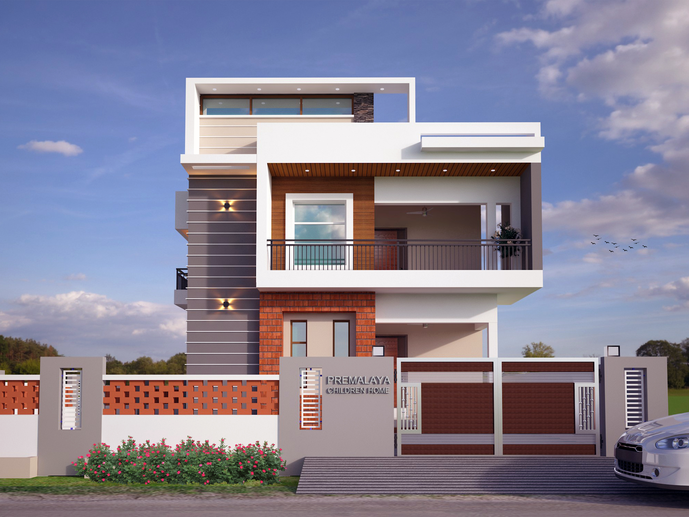
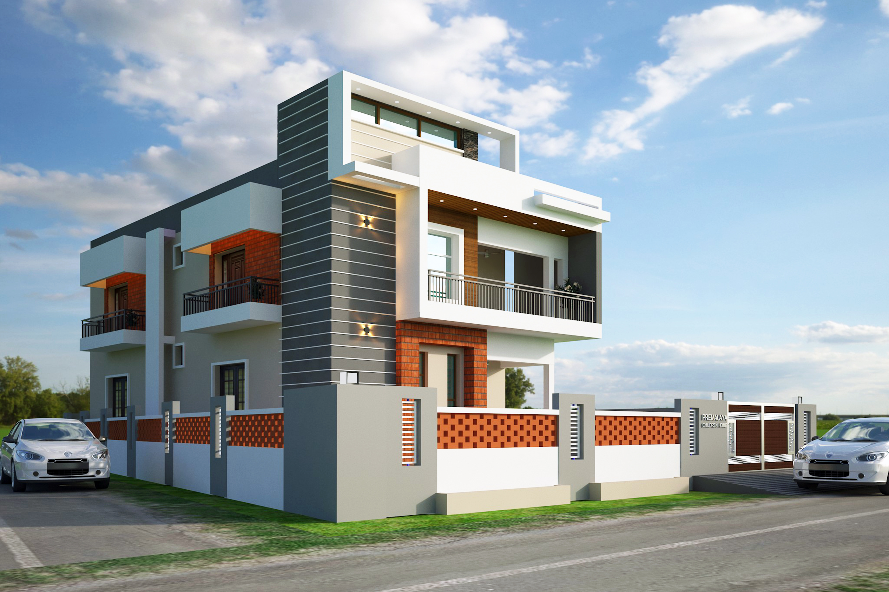

“ Children are heritage of the Lord.” (Psalms : 127:3)
“PREMALAYA MINISTRIES” is working wholeheartedly to give a better and healthy future to those children who are under the Premalaya Children Home. The purpose of this Premalaya Children Home is to develop child’s focus on GOD. This Premalaya Children Home will not only give a general introduction about God, but will also provide the following regular needs.
Our Children Home is situated in Kanigiri, Andhra Pradesh where the Children are provided with Food, Education, Medical facilities, Shelter, Love and affection to bring them up Educationally, Socially and Spiritually. The Children are Orphan, Semi Orphan, Poor and needy. We got them admitted in School and conducts Spoken English classes in the Evening.
Now the Children Home functioning in a rented place and we find it difficult to pay the rent every month, besides meeting needs of the Children. Premalaya committed to ensure brighter and better future and change their dreams into goals for these young deserving Children.
Premalaya provides Education to the children by conducting supplementary Education for the school going and dropouts. And also provides Educational materials such as books, bags to the Orphan, Semi Orphan Children from economically weaker sections and downtrodden. Premalaya also supports to pay school fees and college fees for those who are unable to meet their Educational expenses.
Premalaya Ministries owns a Land at Kanigiri in Andhra Pradesh and propose to construct its own building for the Children Home, consisting two floors Ground and First floor to accommodate the Children in a good environment. The necessary plot and plan Approval has been obtained for construction of the building from the concerned Government authorities


| # | DESCRIPTION | QTY | RATE/SQ.FT | AMOUNT |
|---|---|---|---|---|
| 1 | Bricks(Well burnt 2nd class bricks) | 36,500Nos | 8 rs/no | 2,92,000/- |
| 2 | Cement(coromondal,ultratech) | 750 bags | 430/bag | 3,22,500 |
| 3 | Fine aggregate (for masonry & r.c.c works) | 1800cft | 60/cft | 1,08,000/- |
| 4 | Fine aggregate (for plastering works) | 400 cft | 65/cft | 26,000/- |
| 5 | Steel(ARS,I-steel,GBR brands) | 7500kg | 50/kg | 3,75,000/- |
| 6 | Coarse aggregate(20mm thick) | 1900cft | 50/cft | 95,000/- |
| 7 | Coarse aggregate(40mm thick) | 300cft | 50/cft | 15,000/- |
| 8 | Masonry work (civil work) | 1630sq.ft. | 300/sq.ft | 4,89,000/- |
| 9 | Flooring &Tiles work | Lump Sum | 2,00,000/- | |
| 10 | Color washing(paint) for whole building | Lump Sum | Rs 1,35,000/- | |
| 11 | Material &labour for electrical work | Lump Sum | 1,10,000/- | |
| 12 | Material &labour for plumbing work | Lump Sum | 1,15,000/- | |
| 13 | Septic tank with sanitary connection 20,000 lts capacity | Lump Sum | 2,40,000/- | |
| 14 | R.c.c sump 6000 lts capacity | Lump Sum | 1,20,000/- | |
| 15 | Overhead water tank 3000 lts capacity, Rcc wall & lid.. | Lump Sum | 70,000/- | |
| 16 | Bore well 150 ft. depth with 1 HP Submersible Motor Pump | Lump Sum | 60,000/- | |
| 17 | Weathering course | Lump Sum | 1,60,000/- | |
| 18 | Joinery details | Lump Sum | 2,00,000/- | |
| 19 | Compound wall 10'0" c/c pile foundation using 12mm for 4 no's 8mm stirrups @ 7"c/c 9"x9" plinth beam above 4.5" tk. brick wall 7'0" height | Lump Sum | 3,50,000/- | |
| Grand Total | 34,82,500/- |
| # | DESCRIPTION | QTY | RATE/SQ.FT | AMOUNT |
|---|---|---|---|---|
| 1 | Bricks(Well burnt 2nd class bricks) | 23,000no’s | 8 rs/no | 1,84,000/- |
| 2 | Cement(coromondal,ultratech) | 450 bags | 430/bag | 1,93,500/- |
| 3 | Fine aggregate (for masonry & r.c.c works) | 1300cft | 60/cft | 78,000/- |
| 4 | Fine aggregate (for plastering works) | 400 cft | 65/cft | 26,000/- |
| 5 | Steel(ARS,I-steel,GBR brands) | 6000kg | 50/kg | 3,00,000/- |
| 6 | Coarse aggregate(20mm thick) | 1600cft | 50/cft | 80,000/- |
| 7 | Masonry work (civil work) | 1630sq.ft. | 280/sq.ft | 4,56,400/- |
| 8 | Flooring &Tiles work | Lump Sum | 2,00,000/- | |
| 9 | Color washing(paint) for whole building | Lump Sum | 1,20,000/- | |
| 10 | Material &labour for electrical work | Lump Sum | 1,10,000/- | |
| 11 | Material &labour for plumbing work | Lump Sum | 1,15,000/- | |
| 12 | Over head water tank 3000 lts capacity, Rcc wall & lid.. | Lump Sum | 70,000/- | |
| 13 | Weathering course | Lump Sum | 1,60,000/- | |
| 14 | Joinery details | Lump Sum | 2,00,000/- | |
| Grand Total | 22,92,900/- |
Grand Total for first floor and Second floor construction – Rs. 57, 75, 400/- (Rupees Fifty seven lakhs seventy five thousand and four hundred only)
Kindly consider to donate for construction of the Children Home. Each contribution, however small they might be, can make a huge difference. Together we can make a difference in the lives of the Children in need